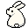

About
"In command of fifty thousand words, capable even of creating new words and telling the world to give them substance... She was a literature girl on an entirely different level."
— Kodama Maria Bungaku Shuusei
Although reading has been a passion of mine for as long as I can remember, I have found that the people around me aren't usually very interested in hearing about it. This website is an attempt to share that passion, whilst also learning more about rudimentary web development.
I believe that writing about or discussing the media that one consumes helps them to avoid mindless consumption. In a world where this kind of unthinking state is so commonplace, this website is a tiny way I try to avoid that particular pitfall.
I am a Catholic humanities student from Ireland.
I spend most of my time working in a bookstore, writing for my degree, going to Mass and studying the Bible, tinkering with Linux, reading in spurts, badly paraphrasing C.S. Lewis, watching war films, trying to win over stray cats, and (often fruitlessly) attempting to improve my Tetris skills.
The topics that are of most interest to me, and which I like to write about here, are:
- Literature;
- Philosophy;
- Theology;
- Minimalism;
- Holistic healthcare;
- Traditional art;
- FOSS and digital privacy;
- Classical and alternative education methods.
I'm not fond of how other social media platforms function due to their lack of individuality and their insistence on short-form content, so I see Neocities as a kind of refreshing refuge.

The website name is inspired by one of my favourite manga, Kodama Maria Bungaku Shuusei. It explores literature through the eyes of someone who truly loves it, and all of its little facets. It's a brilliant testament to the beauty of literature.
The manga screenshots shared throughout the pages on my site are all from either 児玉まりあ文学集成 (Kodama Maria Bungaku Shuusei) or シメジ シミュレーション (Shimeji Simulation), both of which I recommend highly.
site profile: neocities.org/site/literaturegirl
email: literaturegirl [at] protonmail.com